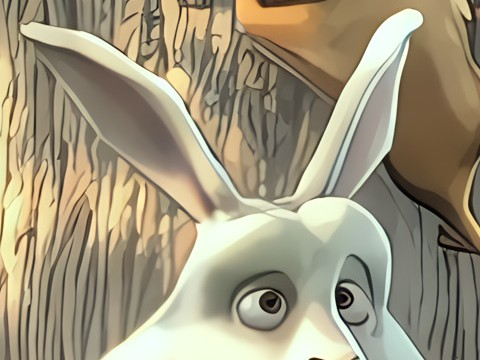
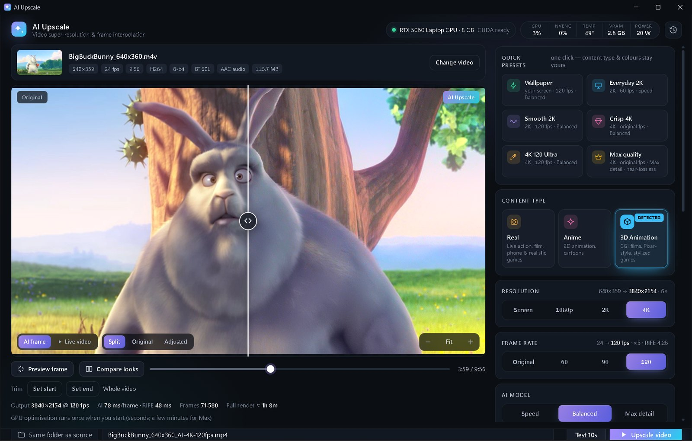

Automatic content detection
Drop in a video and a small vision AI (CLIP) recognizes whether it's real footage, anime or 3D animation — then switches to the AI models made for that kind of video. No guessing which setting to pick.
Turn blurry, low-quality videos into crisp 1080p, 2K or 4K and make them silky smooth at 60, 90 or 120 FPS — right on your own NVIDIA graphics card. It even detects by itself whether your video is real footage, anime or 3D animation and picks the best AI for it.
Same app, same features, either way — nothing is locked. Paying simply helps me keep making free programs for everyone. Paid, paying later or not paying at all: no hard feelings, ever — your happiness is what matters. 💜
Windows 10/11 · NVIDIA RTX GPU
open source on GitHub
Drag to compare · Big Buck Bunny © Blender Foundation, CC BY 3.0 · 3D Animation detected automatically
AMD / Intel graphics and Mac are not supported yet — the AI runs on NVIDIA's CUDA.
C:\AI Upscale or Documents (not "Program Files").Install.bat and keep the window open until it says DONE (10–20 min, ~5 GB download).The installer downloads a private copy of Python, PyTorch/TensorRT and the AI models from their official sources. Nothing is installed system-wide — delete the folder to uninstall.
SHA-256: —
Great video tools shouldn't need a $2,000 graphics card or a monthly subscription. AI Upscale was built and tuned on an everyday RTX 5060 laptop, with lots of tricks (TensorRT, smart tiling, compiled models) so it runs fast on the kind of GPU most people actually have. Got a high-end card? It flies even faster. It's free, and it will stay free — no pro version, no limits, no catch. 🙂
Everything a pro video enhancer does — without the price tag.
Drop in a video and a small vision AI (CLIP) recognizes whether it's real footage, anime or 3D animation — then switches to the AI models made for that kind of video. No guessing which setting to pick.
State-of-the-art models (Real-ESRGAN, APISR, AnimeJaNai, Nomos2, …) rebuild real detail instead of just stretching pixels. “Screen” renders exactly for your monitor — perfect for Wallpaper Engine.
RIFE 4.26 creates brand-new in-between frames for buttery-smooth motion, with scene-cut detection so cuts never smear.
Many “1080p” files were stretched from a lower resolution. AI Upscale measures the real detail and lets the AI work from it — the difference on soft, re-encoded and phone videos is huge.
Three quality tiers, accelerated with NVIDIA TensorRT and compiled models — up to 3× faster than plain PyTorch, with identical output.
Brightness, contrast, gamma, saturation, vibrance, temperature, tint and hue — previewed live on the moving video. One-click looks: Vivid, Cinematic, Anime Pop, Warm, Cool, B&W.
Temporal noise reduction, debanding for smooth gradients, adaptive sharpening and optional film grain.
Before/after slider with zoom, “Compare looks” (Real vs Anime vs 3D side by side at your screen's real size), and a 10-second test render.
Wallpaper, Everyday 2K, Smooth 2K, Crisp 4K, 4K 120 Ultra, Max quality — or tune everything yourself.
GPU load, encoder, temperature, VRAM and power while rendering. Keeps your PC awake and pauses Wallpaper Engine during renders.
10-bit HEVC, AV1 or H.264 via NVENC, original audio kept, trim built in, MP4 or MKV (keeps subtitles).
No uploads, no cloud, no account. Your videos stay on your PC — it even works offline after installing.


Measured on an RTX 5060 Laptop GPU (8 GB) — a 50-second clip upscaled to 2K at 120 FPS:
Faster GPUs are proportionally faster. The first render with a new model takes an extra 1–3 minutes to optimise it for your GPU (once).
MP4, MKV, MOV, AVI, WEBM… The content type is detected automatically.
Or choose resolution, FPS and quality yourself, then tweak colors live.
Drag the before/after slider, zoom in, run a 10-second test.
Hit “Upscale video” — your finished file lands next to the original (or any folder you pick).
Yes — 100% free, forever. The $5 is only a suggested, optional price for people who want to say thanks. Everyone gets the exact same app: no trial, no watermark, no sign-up, no pro version, no length limit, nothing locked. 💜
The same app as everyone else — plus a big thank-you from me and the good feeling of helping. 😊 Your $5 goes straight into building more 100% free programs for everyone, especially people who can't afford expensive software.
Of course! Try it first, take your time. If it ends up helping you, the ❤️ Donate button at the top of this page is always there — any amount, whenever you like. And if you never pay, that's completely fine too.
Absolutely, with all my heart. 💜 This tool exists for you. Please download it, enjoy it, and keep it forever with every feature. No hard feelings at all — your happiness matters more than the money. Sharing it with a friend is a wonderful way to help too.
After paying, PayPal shows a “Return to merchant” link — click it to come back here, where your download starts with a little thank-you. 🎉 If anything goes wrong, just use the Download free button — it's the very same file. Thank you for your support!
Yes. Payments go through PayPal's official, secure checkout — this website never sees your card or account details.
The download is scanned by 60+ engines on VirusTotal (green button above) and the full source code is on GitHub. Because the installer is new and not code-signed, Windows SmartScreen may show “Windows protected your PC” — click More info → Run anyway. The installer only writes inside its own folder.
Never. Everything runs on your own GPU. After installing it works completely offline.
Any NVIDIA GeForce RTX card (20/30/40/50 series, desktop or laptop) with 6 GB+ VRAM. It was developed on an RTX 5060 Laptop GPU, so mid-range cards are first-class citizens. AMD, Intel and Mac aren't supported yet because the AI runs on NVIDIA CUDA.
It's an independent, free and open-source tool that covers the same core jobs — AI upscaling, frame interpolation and enhancement — using well-known open models. Results depend on your video, so try the 10-second test and see for yourself.
When you open a video, a small AI looks at a few frames and decides whether it's real footage, anime or 3D animation, then selects the matching upscaling models. You'll see a “Detected” badge, and you can always override it.
Yes — that's what it was made for! Use the Wallpaper preset: it renders exactly at your screen's resolution (no wasted pixels) at 120 FPS, and pauses Wallpaper Engine while rendering so your GPU is free.
The first time you use a model at a new video size, AI Upscale compiles it specifically for your GPU (1–3 minutes, shown as “Optimizing”). After that it's cached and starts instantly.
From their original authors' official releases (Real-ESRGAN, APISR, AnimeJaNai, AniScale, Nomos2, RIFE, CLIP…), downloaded by the installer and checked with SHA-256. Some models are licensed for non-commercial use, so please use AI Upscale for personal projects. Full credits are in THIRD-PARTY-NOTICES.txt.
Delete the AI Upscale folder and its shortcuts. Nothing else is changed on your PC.
AI Upscale is a gift — made by one person, given away for free. If it brought an old video back to life for you, a small donation helps keep it alive and improving. Even just sharing it with a friend means a lot. Thank you! 🙏
AI Upscale stands on the shoulders of amazing open-source work: Real-ESRGAN (Xintao Wang et al.), APISR (Boyang Wang et al.), AnimeJaNai (the-database), AniScale 2 (Sirosky), LiveAction SPAN (jcj83429), Nomos2 MoSR (Helaman), CGIMaster (Madiator), RIFE (hzwer) via vs-rife (HolyWu), CLIP (OpenAI), spandrel, PyTorch, NVIDIA TensorRT, FFmpeg and uv. Demo footage: Big Buck Bunny © Blender Foundation, CC BY 3.0.
AI Upscale is and will always be free. Donations simply help cover the time it takes to keep improving it. Any amount — big or small — is truly appreciated.
rayan6razan@gmail.com
Opens PayPal's official, secure checkout in a new tab — you choose the amount there.
You just made my day. 😊 Your kindness helps keep AI Upscale — and every program I make — free for everyone, including people who can't afford to pay. I truly appreciate you! 🙏✨
⬇️ Your download is starting…
Download didn't start? Click hereEnjoy your crisp, smooth videos — and have a wonderful day! 🌟